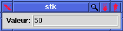

Composite Widgets
Composite Widgets
A composite widget is made by assembling several widgets (simple
or even composite widgets):
(define le (make <Labeled-entry> :value 50 :title "Valeur:"))
defines le as an instance of the <Labeled-entry>
class. This object, on a screen, gives:

In fact, this widget is composed if three Tk basic widgets: a
frame, a label an an entry:
 +
+  +
+ 
- A demonstration of some composite widgets can be launched from here with:
- the non-installed version of STk
(test-stk)
- the installed version of STk
(stk)
- The complete code of the <Labeled-entry> class is approximatively 60 lines.
 Retour
Retour
Erick Gallesio
Last modified: Mon Apr 13 12:08:18 CEST 1998